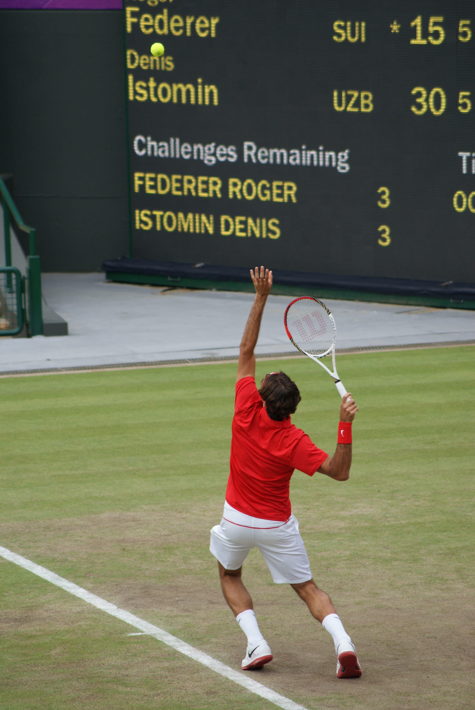

로져 페더러는 2020년 팬이 투표한 올해의 선수로 뽑혔다. 흥미로운 사실은 그는 올해 한 경기도 뛰지 않았음에도... 
스위스 국적의 테니스 선수. 테니스 황제로 불리는 테니스 역사상 가장 위대한 선수 중 한 명 2018년 기준 전 세계 모든 스포츠를 통틀어 가장 브랜드 가치가 높은 운동선수로 평가받으며 또한 전 세계에서 가장 유명하고 인지도가 높은 스위스인 중 한 명이기도 하다.